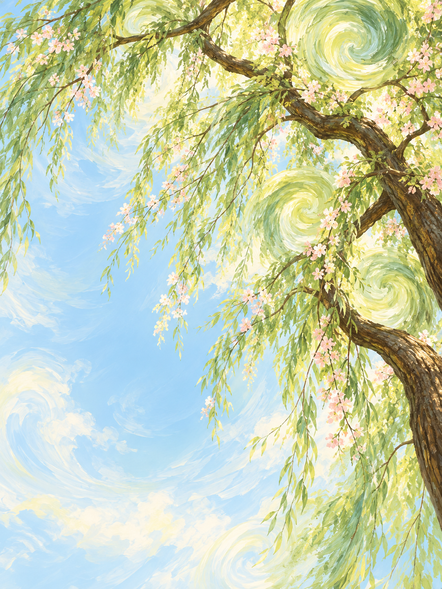
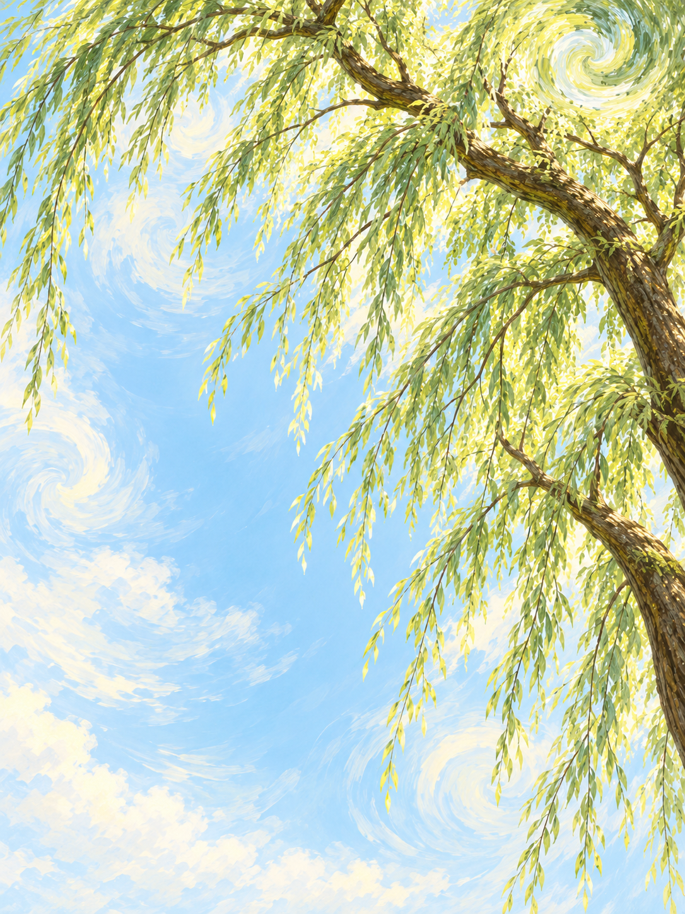
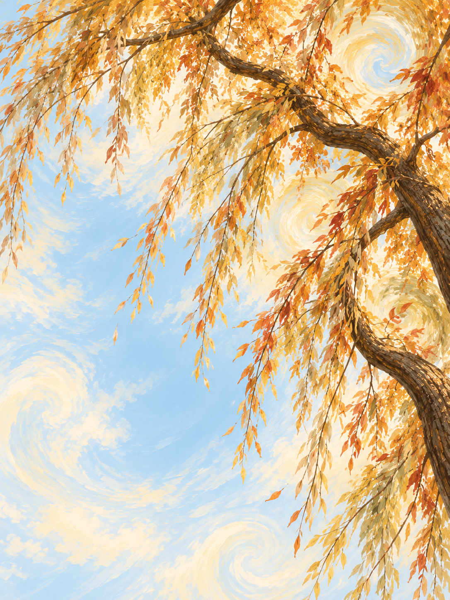
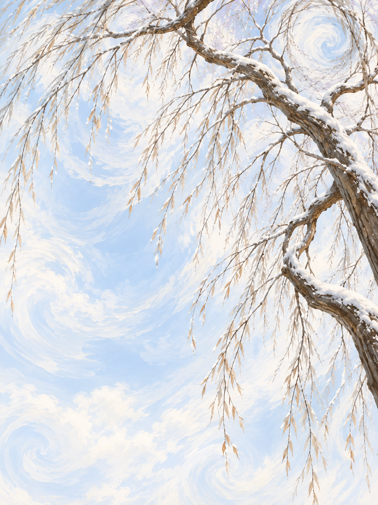
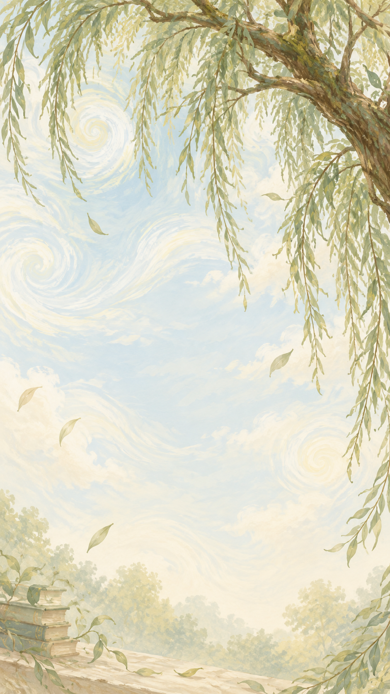
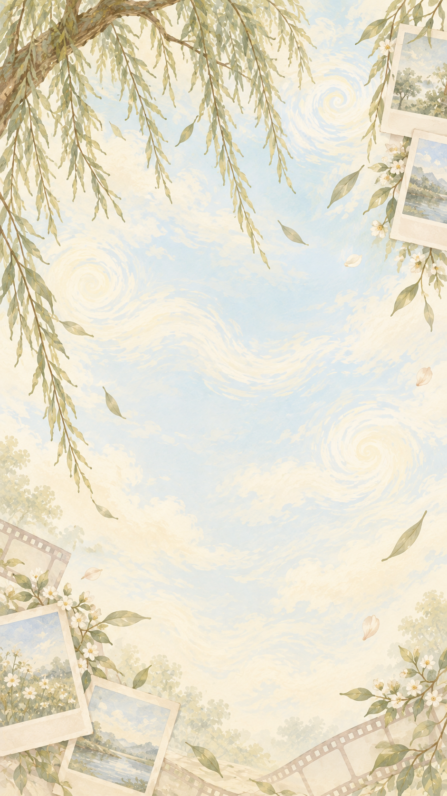
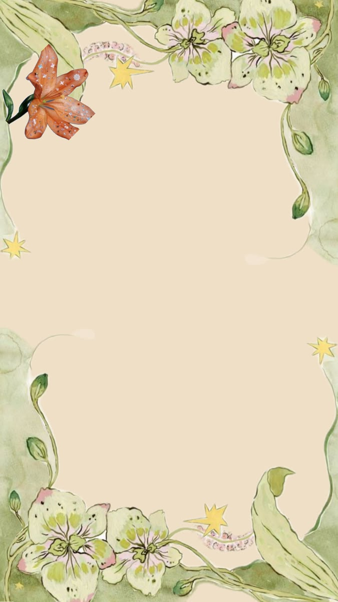

Lente
Bron: ChatGPT (OpenAI)
Op deze pagina vind je de bronnen van de afbeeldingen die ik voor mijn digitale tuin heb gebruikt.
Deze achtergronden zijn met behulp van ChatGPT (OpenAI) gemaakt. Ik heb zelf de kleuren, seizoenen en sfeer gekozen.

Bron: ChatGPT (OpenAI)

Bron: ChatGPT (OpenAI)

Bron: ChatGPT (OpenAI)

Bron: ChatGPT (OpenAI)

Bron: ChatGPT (OpenAI)

Bron: ChatGPT (OpenAI)
Voor mijn boekenpagina heb ik afbeeldingen van de omslagen van mijn favoriete boeken gebruikt.

Charlotte Brontë
Bron: Penguin Classics
George Orwell
Bron: Insel Verlag
John Steinbeck
Bron: Libraff
Delia Owens
Bron: LL Könyvesbolt
Zülfü Livaneli
Bron: Other Press
José Mauro de Vasconcelos
Bron: Pushkin Press